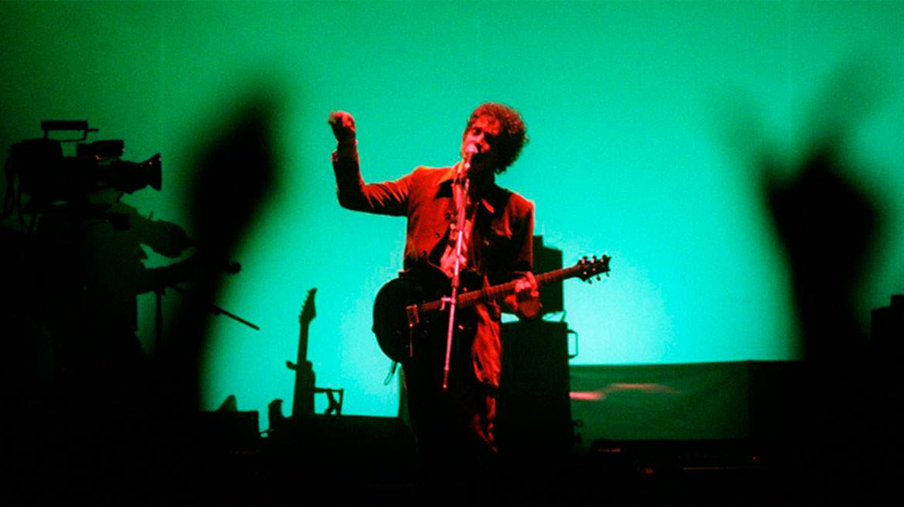

Gustavo Cerati ha tenido una carrera llena de conciertos y presentaciones en vivo. Acá podés encontrar información sobre sus actuaciones más destacables.
Gira Bocanada (1999-2000)
Esta gira se dió luego de la separación de Soda Stereo, influenciada por la música electrónica, el trio hop y el uso de samples.
Una de las canciones titulada "Puente", se convirtió en un himno de esta gira, siendo hoy la canción más interpretada de su etapa solista
11 Episodios Sinfónicos (2001-2002)
Fue un proyecto donde Cerati decidió interpretar todas las canciones de su carrera, junto a una orquesta sinfónica.
Además, fue vestido como el personaje "El Principito", presentandose en teatros como el Teatro Avenida o el Teatro Gran Rex
Gira Siempre es Hoy (2002-2004)
Una gira extensa y con un carácter experimental, donde las canciones del álbum se extendían con improvisaciones y reinterpretaciones electrónicas y rockeras. A su vez, en esta gira recorrió otros países además de Argentina, como Chile, México y hasta Estados Unidos
Gira Ahí Vamos (2006-2007)
Gira destacada por el regreso triunfal de Gustavo Cerati, hacia un sonido de rock crudo impulsado por guitarras eléctricas. LLego a presentarse en lugares como España, Inglaterra y en el Festival de Viña del Mar en Chile. Y ganando galardones como el premio Grammy Latino por Mejor álbum de Rock y Mejor canción de Rock por "Crimen"
Gira Fuerza Natural (2009-2010)
Esta fue su última gran aventura musical, la cual estaba enfocada en un concepto de viaje con sonidos folclóricos, psicolélicos y espaciales. El show se dividía en dos partes: la primera era una interpretación de su álbum Fuerza Natura, y la segunda, un repaso por sus éxitos como solista.
Su último show fue el 15 de mayo de 2010, en la Universidad Simón Bolivar de Caracas, Venezuela, antes de sufrir su accidente cerebrovascular.

Para visitar otras páginas: